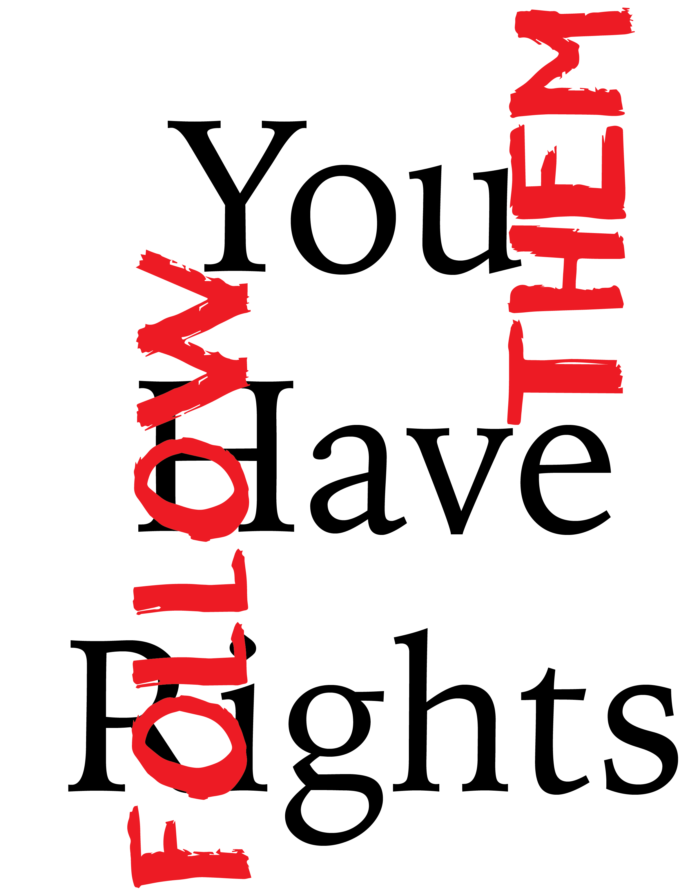

Laws of Protesting in Melbourne
Depending on the area, the local council may expect you to hold a permit. A permit from VicRoads may be needed where a protest is probable to affect significant roads and freeways.
Police are only authorised to request you to leave a public place or shut down a protest if your behaviour is inducing damage to the property, a threat to public safety or protestors are engaging in violence. If you are asked to leave a public area, you are usually not allowed to come back to that place for 24 hours.
You may be faced or questioned by police during a protest. It is usually best to stay calm during this process, and knowing your rights can help you do this.
Remember these key rights:
The police do not have the right to ask your name or address without reason.
Ordinarily, a police officer can only request you to give your name and address if they think you: have committed an offence or are about to perform one. Though, it is an offence to refuse to give the police your name and address or to give them a false name and address if they have a lawful purpose of asking you for your information.
You are not obligated to give any information exceeding your name and address if asked by police. In this case, you can apply your right to be silent to any other questions and say ‘no comment’.
There is no such thing as talking ‘off the record’. Anything you reply with to a police officer can be used by them to arrest or charge you. The police can use the words you said as evidence in court to prove that you violated the law.
If the police arrest you, you must be told that you are being arrested and why.
A police officer can also demand someone who is wearing a face covering to leave a designated area. The police officer must understandably believe that the person is wearing the face-covering primarily to conceal their identity or to preserve themselves from the effects of crowd-controlling substances (e.g. capsicum spray).
Being non-violent is the best way to bring about change.

